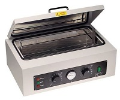

Service cardiologie l'hopital
Le premier jour je me retrouve avec une infirmière et une aide
soignante. Je suis bien acceuillie. Comme on dit:
“bienvenue dans le monde du travail“
L’aide-soignante est ma référente, L’infirmière me dit :“ nous allons commencer par donner les thermomètres.“ Ensuite
nous allons faire les toilettes.“
Elle me dit:
“comme tu le vois nous sommes en sous effectif “
et me
demande :
“ tu sais faire ta toilette ? “. et bien tu fais la même chose
a une personne couchée Cela me met mal à l’aise mais je n’ai pas le choix. Puis aux
malades mieux portant, je dois leurs porter une bassine afin
qu’ils commencent leur toilette. Pour d’autres, Je les accompagne
au lavabo et retourne auprès d’eux afin de les aider à finaliser
leur toilette.
Nous arrêtons les toilettes afin de prendre la pose du petit déjeuner en compagnie du reste du personnel, puis les toilettes terminées, nous faisont le ménage de l’entourage des convalescents ainsi que les sanitaires. Vient ensuite le service des repas et les transmissions pour l’équipe de l’après-midi. Les après-midis sont consacrés à la sortie des malades en fin d’hospitalisation. Pendant ce temps les chambres sont désinfectées afin d’accueillir d’autres personnes. Il arrive quelquefois le matin de procéder aux sorties afin de recevoir les malades au service des soins intensif (USIC). Dans ce service, j’effectue des tâches de préparation des patients pour la pose de PM Pace MAKER , préparation des gouttes, prises de températures, et préparations d’examens de coronarographie. D’autres tâches consistent à la réfection des lits, changer les alèzes et frictionner des patients qui reviennent d’examens.
La fin de service se traduit par la distribution du diner, la
préparations et distributions des tisanes et puis nous refaisons
le lit. Nous couchons certains malades. C’est l’heure des
transmissions à l’équipe de nuit pour assurer la continuité de
service.
Dans ce service de cardiologie, un jour une aide-soignante me
propose de voir un décès afin de connaitre la gestion de cette
tâche que je considère douloureuse pour moi. Je ne savais pas
quoi répondre, même si cela doit faire partie des actions à
mener au cours de ma vie professionnelle, je dois me lancer.
J’accepte, cependant cette mission. En m’approchant du corps qui
m’est présenté,
je me sens mal, à 18 ans, il est plutôt normal que cette
situation soit délicate à réaliser et une plus longue expérience
est nécessaire pour affronter la rencontre d’une personne
décédée.
Mon quotidien est moins éprouvant que cette anecdote. Emmener les malades en salle d’examen, transférer le linge sale puis rapporter le linge propre en chambre. Le transfert des instruments vers la centrale de stérilisation fait aussi partie du travail. Je suis resté une demie journée pour voir comment on stérilise de tous les instruments mais dans les services il y a aussi des POUPINELLE  . Au fur et à mesure que les jours passent, je me sens plus en confiance, mes gestes sont plus surs et l’ambiance du service est bonne. Lors des changements de médecins internes, tous les 6 mois, nous organisons un grand déjeuner.En fin d’année, c’était la sortie au restaurant pour tout le service.